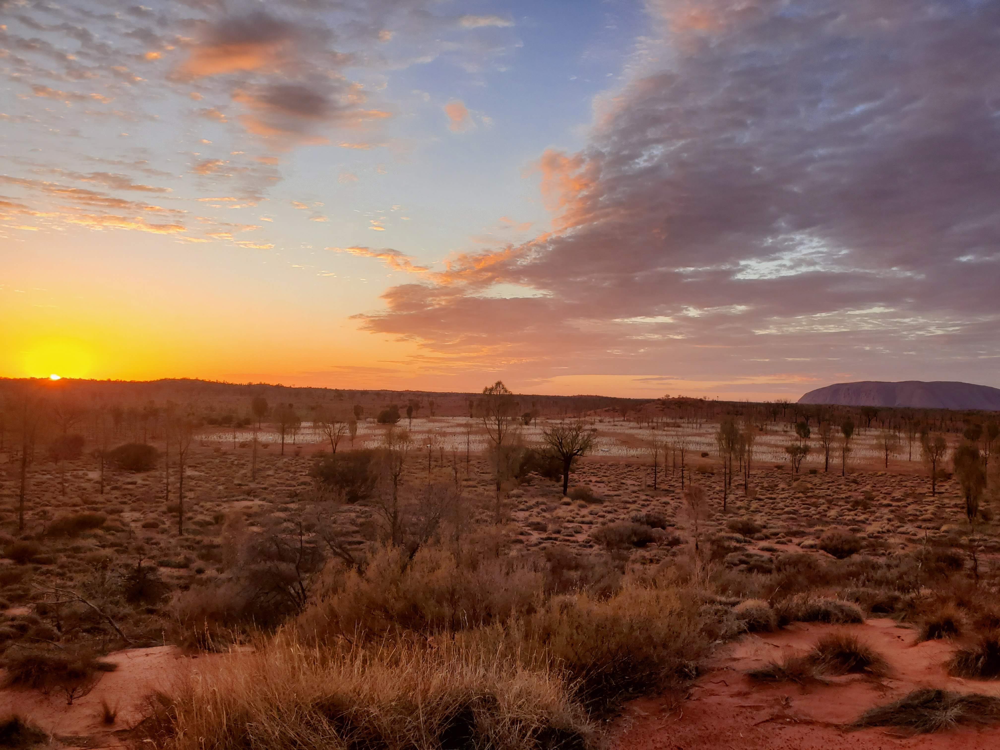
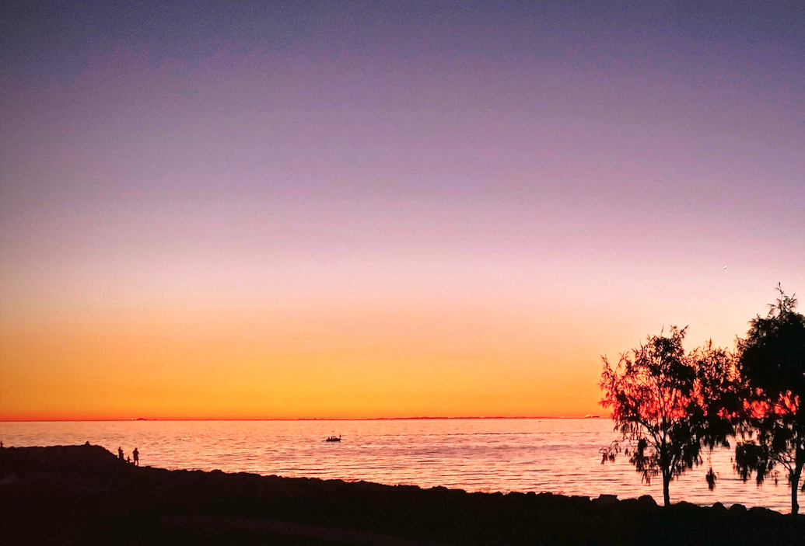
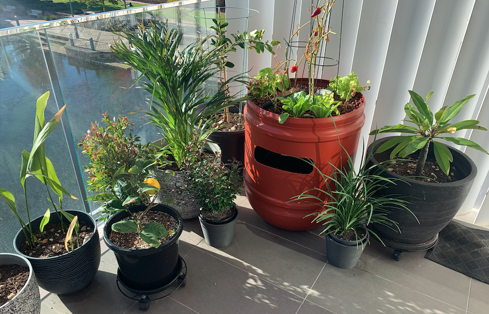

About Me
Hello! My name is Tyler.
I’m an American currently living in Western Australia. I have always been curious about what it takes to write code and have had the pleasure to be around some very talented software developers from around the world. I am very much enjoying the first year of my Associate's Degree in Software Development from the College of Western Idaho. I look forward to all the learning opportunities still to come.
I’ve been lucky to spend the last few years travelling to multiples countries for work. CWI has given me the opportunity to continue my education from anywhere in the world, including Australia.
 I enjoy growing plants in my free time. Well, I try to grow them... I've been learning how to grow vegetables using aquaponics. I've got half a dozen goldfish in the orange olive barrel below that help provide nutrients to the lettuce and peppers.
